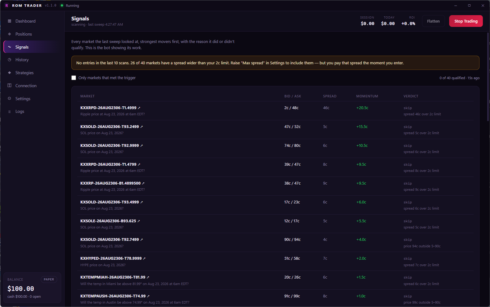
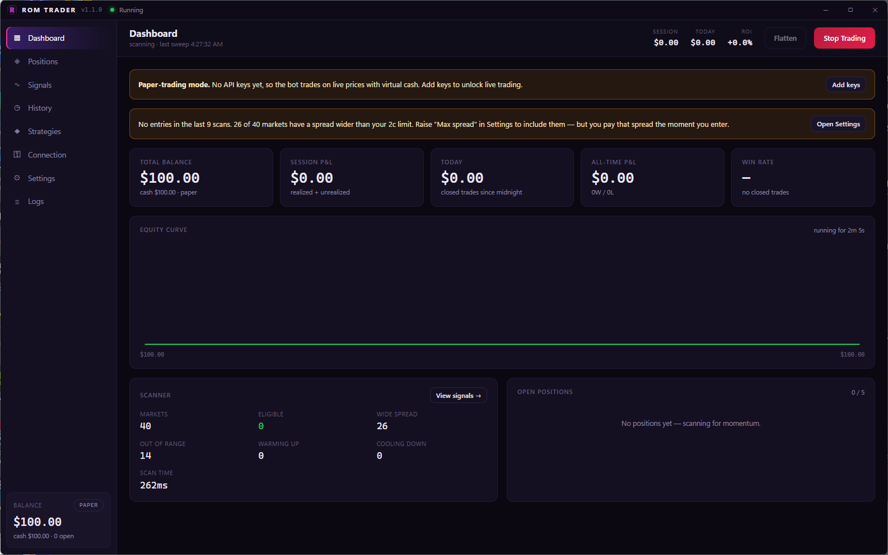
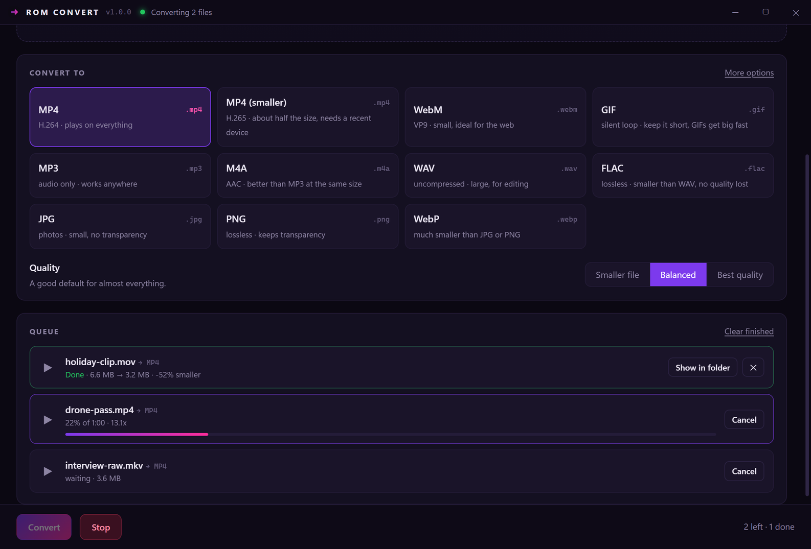
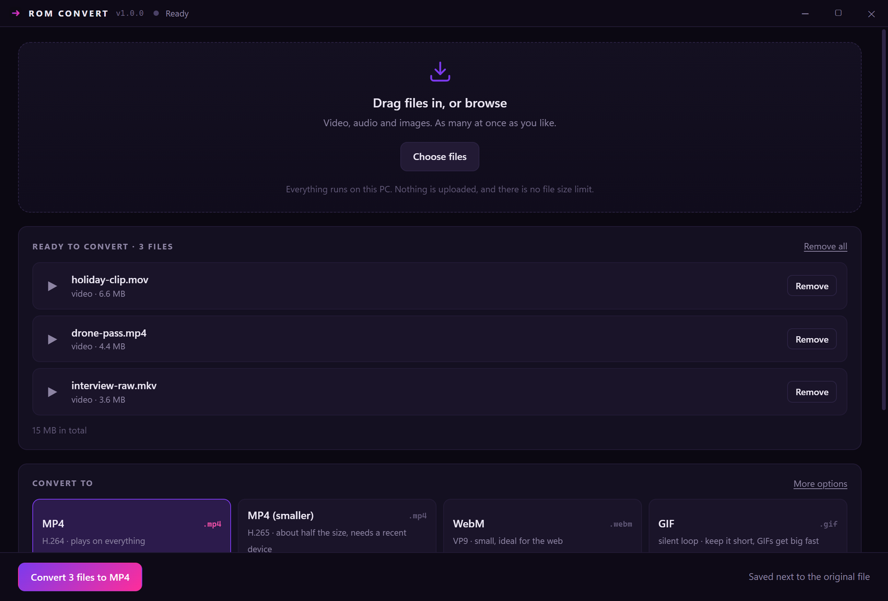

Apps. No strings.
Free Windows apps, built by one person.
DOWNLOADS
THE REAL THING
No mockups. Both apps, running.




ROM CONVERT
Converting a file shouldn’t mean uploading it. Drag it in and it never leaves the machine.
Nothing is uploaded
ffmpeg ships inside the app and does the work on your own machine. No server sees your files, no size cap, no watermark — and it keeps working with the network switched off.
Formats, not codecs
Pick what you actually want — plays on everything, about half the size, ideal for the web — and it chooses the encoder and settings. Eleven outputs across video, audio and images.
It never overwrites
Convert the same file twice and you get the first result and a second one beside it. Writing over your original is refused outright, and scaling only ever shrinks — a 720p cap leaves a 480p clip alone.
Cancel without the mess
Stop a conversion and the half-written file is deleted, because a truncated video that looks finished is worse than none. Failures explain themselves in plain words.
A whole folder at a time
Drag in as many files as you like and watch the queue work through them, with real progress and the speed it’s running at. Each one reports what it saved when it lands.
Trim and shrink
Cut to a section, cap the resolution, or pick a smaller quality preset when the file needs to fit somewhere. Audio can be pulled straight out of a video in one step.
ROM TRADER
A bot that shows its work, and stops itself. Paper-trades until you say otherwise.
Momentum engine
Scans the most liquid Kalshi markets closing within two hours and rides short-term price moves — take-profit, stop-loss and reversal exits built in.
It shows its work
A live signals feed lists every market the last sweep looked at, with the reason it did or didn’t qualify — spread too wide, price out of range, momentum under the trigger.
Test it before you trust it
Every market sweep is recorded while it runs. Replay that data through your settings and all three presets at once — the same code that trades live, the same hours of market, four sets of results side by side. It won’t tell you what happens next, but it will tell you which settings were obviously worse.
Brakes that work
Paper-trades by default — real orders need your own API keys and an explicit switch. Then it stops itself: on a daily loss limit, on a run of losses in a row, and outside the hours you allow. It also refuses any trade whose target can’t clear Kalshi’s round-trip fee, because those lose money however often they win. Plus one-click flatten and a cooldown so it can’t sell and instantly re-buy the same market.
Runs in the background
Close the window and it keeps trading from the tray, where stop and close-all also live. Toasts report each open and close, and make a sound only when the engine has stopped itself — the one you actually need to hear. Updates download quietly but never install mid-session, because restarting would abandon open positions.
Open source
On GitHub under MIT, with 197 assertions — including suites that run against real Windows credential encryption and drive the running app itself. Per-user installer, uninstalls clean: no account, no background services.
IS THIS SAFE?
A fair question to ask of a free download from someone you’ve never heard of.
So verify it yourself instead. Every release publishes the SHA-256 of its installer. Paste this into PowerShell after downloading and it will tell you outright whether the file you have is byte-for-byte the one that was published.
$f = "$HOME\Downloads\ROM-Trader-Setup.exe"
$want = (irm https://github.com/romanstma-cpu/rom-apps/releases/latest/download/SHA256SUMS.txt).Split(' ')[0]
if ((Get-FileHash $f -Algorithm SHA256).Hash -eq $want) { "MATCH" } else { "DOES NOT MATCH - do not run it" }For ROM Convert, swap both names:
$f = "$HOME\Downloads\ROM-Convert-Setup.exe"
$want = (irm https://github.com/romanstma-cpu/rom-convert/releases/latest/download/SHA256SUMS.txt).Split(' ')[0]
if ((Get-FileHash $f -Algorithm SHA256).Hash -eq $want) { "MATCH" } else { "DOES NOT MATCH - do not run it" }Beyond that: every download comes from a GitHub release, the full source for Trader and Convert is public under MIT, and both installers are per-user — they never ask for administrator rights and uninstall cleanly. You can also read the code signing policy.